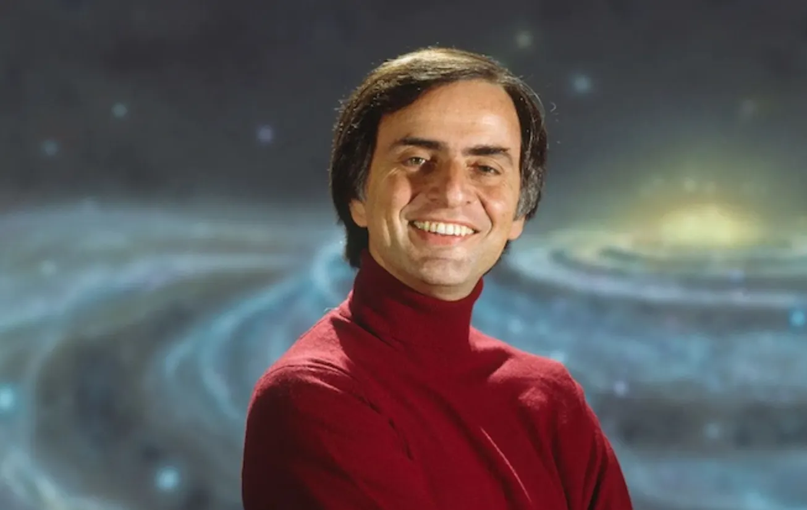

| Carl Sagan | ||
|---|---|---|
|
|
||
|  |
Carl Edward Sagan (Nueva York, 9 de noviembre de 1934-Seattle, 20 de diciembre de 1996) fue un astrónomo, astrofísico, cosmólogo, astrobiólogo, escritor y principalmente un reconocido divulgador científico estadounidense. Inicialmente fue profesor asociado de la Universidad de Harvard y posteriormente profesor principal de la Universidad de Cornell. En esta última, fue el primer científico en ocupar la Cátedra David Duncan de Astronomía y Ciencias del Espacio, creada en 1976, y además director del Laboratorio de Estudios Planetarios.
Fue un defensor del pensamiento escéptico científico y del método científico, pionero de la exobiología, promotor de la búsqueda de inteligencia extraterrestre a través del proyecto SETI. Impulsó el envío de mensajes a bordo de sondas espaciales, destinados a informar a posibles civilizaciones extraterrestres acerca de la cultura humana. Mediante sus observaciones de la atmósfera de Venus, fue de los primeros científicos en estudiar el efecto invernadero a escala planetaria.
Carl Sagan se hizo especialmente conocido gracias a la galardonada serie documental de televisión Cosmos: Un viaje personal, producida en 1980, de la que fue narrador y coautor. Fue la serie más vista de la historia de la televisión pública estadounidense, con una audiencia de unos 500 millones de personas en unos 60 países.1 Para acompañar la serie se publicó el libro Cosmos. También escribió la novela de ciencia ficción Contact, de 1985, en la que se basó la película homónima de 1997. Sus publicaciones, que contienen 595 000 artículos,2 están archivados en la Biblioteca del Congreso de EE.UU.3
También publicó numerosos artículos científicos,4 y fue autor, coautor o editor de más de una veintena de libros de divulgación científica. En 1978 ganó el Premio Pulitzer de "Literatura general de no ficción" por su libro Los dragones del Edén.
A lo largo de su vida, Sagan recibió numerosos premios y condecoraciones por su labor como comunicador de la ciencia y la cultura. Hoy es considerado uno de los divulgadores de la ciencia más carismáticos e influyentes, gracias a su capacidad de transmitir las ideas científicas y los aspectos culturales al público no especializado con sencillez no exenta de rigor.
Nació en Brooklyn, Nueva York,5 en una familia de judíos ucranianos. Su padre, Sam Sagan, era un obrero de la industria textil nacido en Kamianets-Podilsky, Ucrania,6 y su madre, Rachel Molly Gruber, era ama de casa. Carl recibió su nombre en honor de la madre biológica de Rachel, Chaiya Clara, en palabras de Sagan "la madre que ella nunca conoció". Tenía una hermana llamada Carol.
La familia vivía en un modesto apartamento cerca del océano Atlántico, en Bensonhurst, un barrio de Brooklyn. Según Sagan, eran judíos reformistas, el más liberal de los tres principales grupos judíos. Tanto Carl como su hermana coinciden en que su padre no era especialmente religioso, pero que su madre indudablemente creía en Dios, y participaba activamente en el templo...; y solo servía carne kosher.7 Durante el auge de la Gran Depresión, su padre tuvo que aceptar un empleo como acomodador de cine.
Según el biógrafo Keay Davidson, la guerra interior de Sagan era resultado de la estrecha relación que mantenía con sus padres, quienes eran opuestos en muchos sentidos. Sagan atribuía sus posteriores impulsos analíticos a su madre, una mujer que conoció la pobreza extrema siendo niña, y que había crecido casi sin hogar en la ciudad de Nueva York, durante la Primera Guerra Mundial y la década de 1920.7 Tenía las ambiciones propias de una mujer joven, pero bloqueadas por las restricciones sociales, por su pobreza, por ser mujer y esposa, y por ser judía. Davidson señala que ella, por tanto, adoraba a su hijo; él haría realidad sus sueños no cumplidos.7
Sin embargo, su capacidad para sorprenderse venía de su padre. En su tiempo libre, regalaba manzanas a los pobres o ayudaba a suavizar las tensiones entre patronos y obreros en la tumultuosa industria textil de Nueva York.7 Aunque intimidado por la brillantez de Carl, por sus infantiles parloteos sobre estrellas y dinosaurios, se tomó con calma la curiosidad de su hijo, como parte de su educación.7 Años más tarde, como escritor y científico, Carl recurriría a sus recuerdos de la infancia para ilustrar ideas científicas, como hizo en su libro El mundo y sus demonios.7 Sagan describe así la influencia de sus padres en su pensamiento posterior:
Las contribuciones de Sagan fueron vitales para el descubrimiento de las altas temperaturas superficiales del planeta Venus. A comienzos de la década de 1960 nadie sabía a ciencia cierta cuáles eran las condiciones básicas de la superficie de dicho planeta, y Sagan enumeró las posibilidades en un informe que posteriormente fue divulgado en un libro de Time-Life titulado Planetas. En su opinión, Venus era un planeta seco y muy caliente, oponiéndose al paraíso templado que otros imaginaban. Había investigado las emisiones de radio procedentes de Venus y llegado a la conclusión de que la temperatura superficial de este debía de ser de unos 380 °C. Como científico visitante del Laboratorio de Propulsión a Chorro de la NASA, participó en las primeras misiones del Programa Mariner a Venus, trabajando en el diseño y gestión del proyecto. En 1962, la sonda Mariner 2 confirmó sus conclusiones sobre las condiciones superficiales del planeta.
Sagan fue de los primeros en plantear la hipótesis de que una de las lunas de Saturno, Titán, podría albergar océanos de compuestos líquidos en su superficie, y que una de las lunas de Júpiter, Europa, podría tener océanos de agua subterráneos. Esto haría que Europa fuese potencialmente habitable por formas de vida.20 El océano subterráneo de agua de Europa fue posteriormente confirmado de forma indirecta por la sonda espacial Galileo. El misterio de la bruma rojiza de Titán también fue resuelto con la ayuda de Sagan, debiéndose a moléculas orgánicas complejas en constante lluvia sobre la superficie de la luna saturniana.21
Sagan también contribuyó a mejorar la comprensión de las atmósferas de Venus y Júpiter y de los cambios estacionales de Marte. Determinó que la atmósfera de Venus es extremadamente caliente y densa, con presiones aumentando gradualmente hasta la superficie planetaria. También percibió el calentamiento global como un peligro creciente de origen humano, y comparó su progreso en la Tierra con la evolución natural de Venus: camino a convertirse en un planeta caliente y no apto para la vida como consecuencia de un efecto invernadero fuera de control. También estudió las variaciones de color de la superficie de Marte y concluyó que no se trataba de cambios estacionales o vegetales, como muchos creían, sino de desplazamientos del polvo superficial causados por tormentas de viento.
Sin embargo, Sagan es más conocido por sus investigaciones sobre la posibilidad de la vida extraterrestre, incluyendo la demostración experimental de la producción de aminoácidos mediante radiación y a partir de reacciones químicas básicas.22 Él y su colega de Cornell, Edwin Ernest Salpeter, especularon sobre la posibilidad de la existencia de vida en las nubes de Júpiter, dada la composición de la densa atmósfera del planeta, rica en moléculas orgánicas.